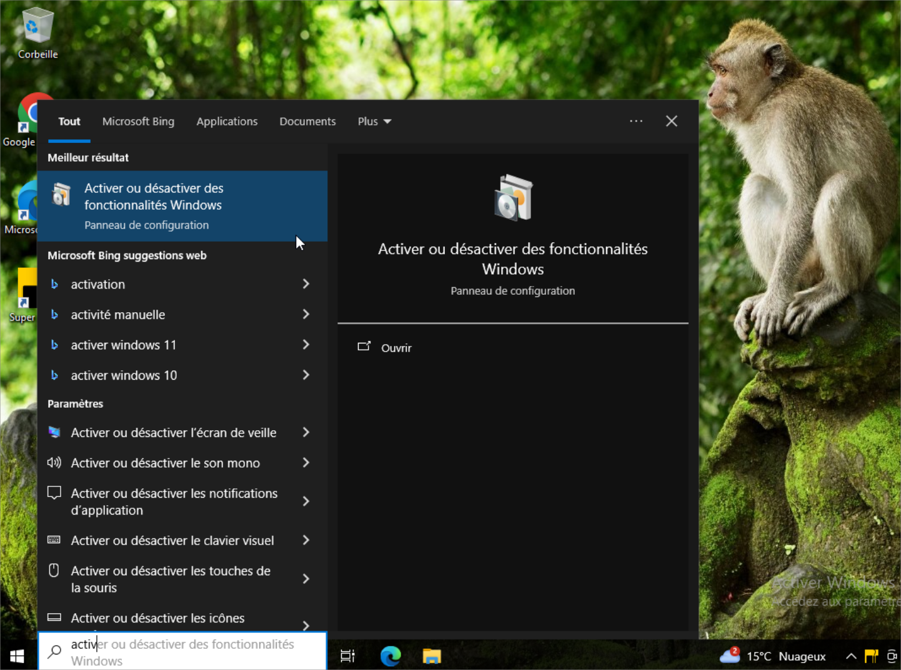
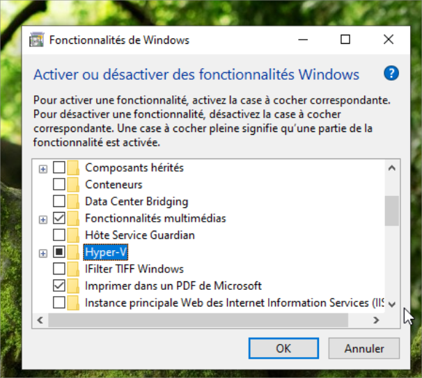
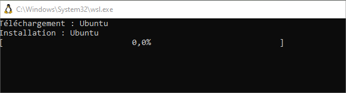
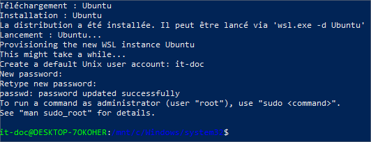
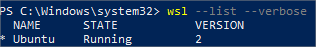
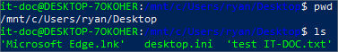
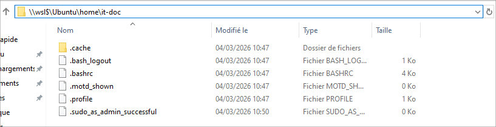
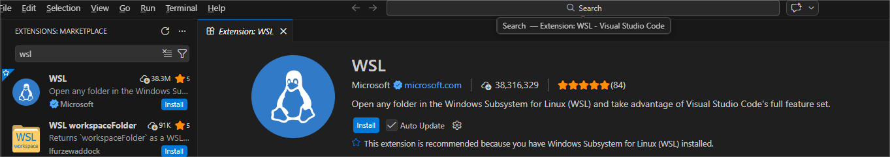
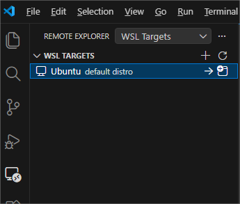
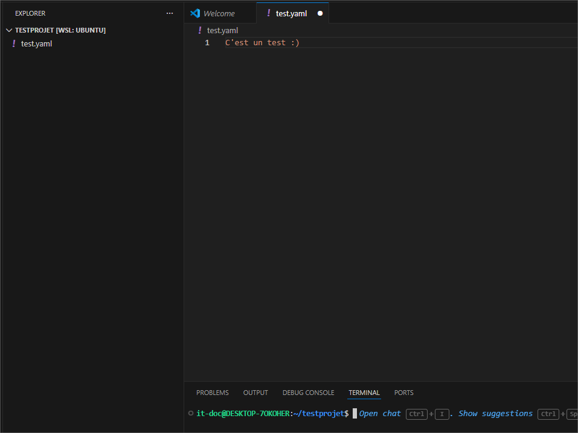

1. Introduction à WSL
WSL (Windows Subsystem for Linux) est une fonctionnalité de Windows 10/11 qui permet d'exécuter un environnement Linux natif directement sous Windows, sans machine virtuelle ni dual boot.
Contrairement à une VM classique, WSL ne nécessite pas d'hyperviseur lourd : il s'intègre directement au noyau Windows via une couche de compatibilité à l'aide d'Hyper-V, offrant des performances proches d'un Linux natif.
Pourquoi utiliser WSL en infrastructure ?
- Utiliser des outils Linux (bash, ssh, curl, ansible, terraform...) sans quitter Windows
- Tester des scripts Bash/Shell directement sur le poste de travail
- Intégration native avec VS Code, Docker Desktop et Windows Terminal
2. Prérequis & Compatibilité
Configuration requise
| Élément | Requis |
|---|---|
| Système d'exploitation | Windows 10 ou Windows 11 version Pro |
| Architecture | x64 ou ARM64 |
| Virtualisation | Activée dans le BIOS/UEFI (Intel VT-x ou AMD-V) |
| Espace disque | Minimum 2 Go (selon la distribution choisie) |
Activation Hyper-V
Dans la barre de recherche Windows, tapez :
Activer ou désactiver des fonctionnalités Windows
Cochez Hyper-V puis cliquez sur OK.

Windows peut demander un redémarrage une fois l'installation terminée.
3. Installation de WSL
Méthode recommandée (Windows 10 21H2+ / Windows 11)
Depuis Windows 10 version 21H2 et Windows 11, une seule commande suffit pour installer WSL 2 avec Ubuntu. À exécuter dans PowerShell (Administrateur) :
wsl --installCette commande installe automatiquement la fonctionnalité WSL, le noyau Linux WSL 2, et Ubuntu par défaut. Un redémarrage est nécessaire.
4. Premier démarrage & configuration
Au premier lancement d'Ubuntu, un terminal s'ouvre et lance l'initialisation. Cette étape peut durer quelques minutes.

Création du compte utilisateur
WSL demande de créer un compte utilisateur Linux indépendant du compte Windows :

Bon à savoir — Le nom d'utilisateur Linux peut être différent du compte Windows. Le mot de passe ne s'affiche pas à la saisie, c'est un comportement normal sous Linux.
Mise à jour du système
Après la création du compte, mettre à jour les paquets :
sudo apt update && sudo apt upgrade -yVous êtes maintenant sur votre machine Ubuntu à jour et prête pour vos tests !
5. Commandes essentielles
Gestion des distributions WSL
Ces commandes s'exécutent dans PowerShell ou le Terminal Windows (pas dans WSL) :
| Commande | Description |
|---|---|
wsl --list --verbose |
Lister les distros installées et leur version WSL |
wsl --status |
Afficher l'état général de WSL |
wsl --shutdown |
Arrêter toutes les distros WSL |
wsl --set-default Ubuntu |
Définir la distro par défaut |
wsl --unregister Ubuntu |
Supprimer une distro (données supprimées) |
wsl --update |
Mettre à jour le noyau WSL |
wsl --install -d Debian |
Installer une autre distribution |

Résultat de wsl --list --verbose — distro active en version 2
6. Intégration avec Windows
L'un des points forts de WSL est son intégration transparente avec le système de fichiers Windows et les outils natifs.
Accès aux fichiers Windows depuis WSL
Les disques Windows sont montés automatiquement sous /mnt/ :
# Accéder au bureau Windows depuis WSL
cd /mnt/c/Users/VotreNom/Desktop
# Lister les disques montés
ls /mnt/
Accès aux fichiers WSL depuis Windows
Les fichiers Linux sont accessibles depuis l'explorateur Windows via :
\\wsl$\Ubuntu\home\votre_utilisateurIl est aussi possible de taper \\wsl$ directement dans la barre d'adresse de l'explorateur pour voir toutes les distros installées.

Accès aux fichiers WSL depuis l'explorateur Windows
7. Intégration avec VS Code
VS Code s'intègre nativement avec WSL via l'extension WSL. Le code s'exécute côté Linux tandis que l'interface reste côté Windows.
Installation de l'extension
Dans VS Code, installez l'extension WSL directement depuis le store d'extensions.

Ouvrir une machine WSL dans VS Code
Une fois l'extension installée, vous aurez à gauche un nouvel onglet Remote Explorer. VS Code va directement reconnaître toutes vos distributions.

Cliquez sur la flèche et VS Code va installer une extension sur votre WSL. Il va ouvrir une nouvelle fenêtre VS Code, avec le terminal intégré et la possibilité de naviguer dans les dossiers de votre machine WSL.

Récapitulatif des avantages WSL
| Avantage | Détail |
|---|---|
| Légèreté | Pas de VM complète, démarrage en quelques secondes |
| Intégration Windows | Accès bidirectionnel aux fichiers, appels croisés d'exécutables |
| Outils natifs Linux | Bash, SSH, curl, git, python... sans émulation |
| VS Code & Docker | Intégration native et transparente |
| Réseau | Accès au réseau Windows, partage de ports possible |